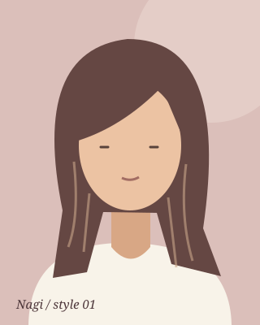
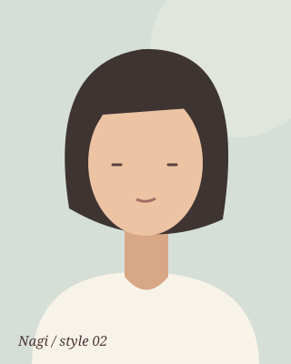
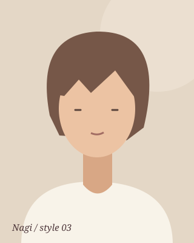
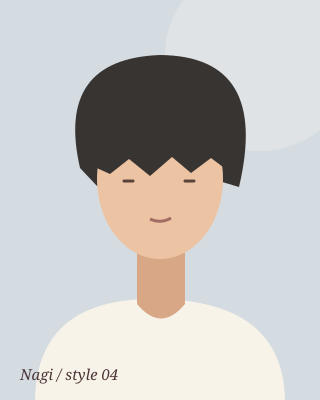
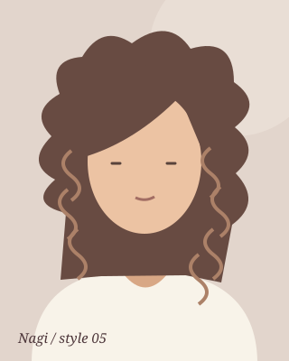
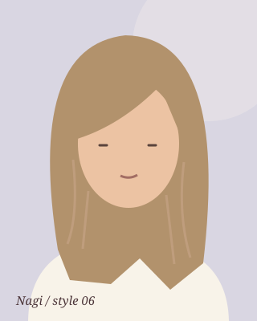
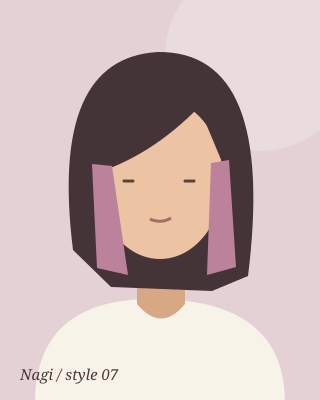
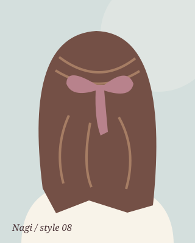
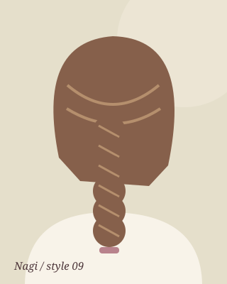

ミディアム
韓国風レイヤー
顔まわりからふわっと動く、くびれのあるレイヤー。
スタイルのポイント
顔まわりに段を入れて、軽さと動きをつくるスタイル。毛先をゆるく巻く仕上げにも。
相談メニュー：カット
HAIR STYLE COLLECTION
長さで選ぶ。カラーで遊ぶ。アレンジを楽しむ。
気になるスタイルから、得意なスタッフに相談してみて。
掲載画像は学習用のイメージイラストです。実際の施術例や仕上がりを示すものではありません。
9件のスタイル

ミディアム
顔まわりからふわっと動く、くびれのあるレイヤー。
顔まわりに段を入れて、軽さと動きをつくるスタイル。毛先をゆるく巻く仕上げにも。
相談メニュー：カット





カラー / ロング
やわらかなベージュで、軽やかな雰囲気に。
明るさや髪の状態によって、ブリーチが必要な場合があります。まずは担当者に相談を。
相談メニュー：カラー（内容は相談）

カラー / ボブ
髪が揺れるたび、ちらっと見える自分だけの色。
内側のピンクをアクセントに。ベースの色や入れる範囲で雰囲気が変わります。
相談メニュー：インナーカラー

アレンジ / ロング
顔まわりはすっきり、後ろ姿はちょっと華やかに。
トップをまとめて、毛先にはゆるい動きを。ライブやお出かけのイメージに。
相談メニュー：ヘアアレンジ

アレンジ / ロング
やわらかな編み目で、特別な日のアクセント。
髪をひとつにまとめ、編み目にふんわりした表情を。長さに合わせて相談できます。
相談メニュー：ヘアアレンジ